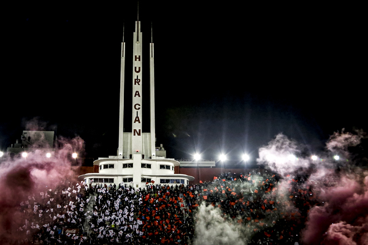
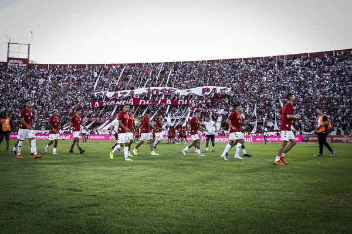

Club Atletico Huracan
 El Club Atlético Huracán es una institución social y deportiva del barrio de Parque Patricios de la ciudad de Buenos Aires, Argentina, cuya principal actividad es el fútbol masculino, en la que su primer equipo participa del torneo de Primera División.Fundado originalmente el 25 de mayo de 1903, en el barrio de Pompeya, fue reorganizado a partir del 1 de noviembre de 1908. Su apodo es el Globo, o su diminutivo, el Globito, y el de sus hinchas, Quemeros. El color de su camiseta es blanco, con la insignia y vivos rojos.Su histórico rival es San Lorenzo, con el que disputa uno de los clásicos más característicos del país. Son también considerados clásicos los partidos que disputa con los otros grandes River Plate, Racing Club, Independiente, y Boca Juniors en especial los enfrentamientos con este último, antiguo rival de la Asociación Argentina de Futbol durante el amateurismo.